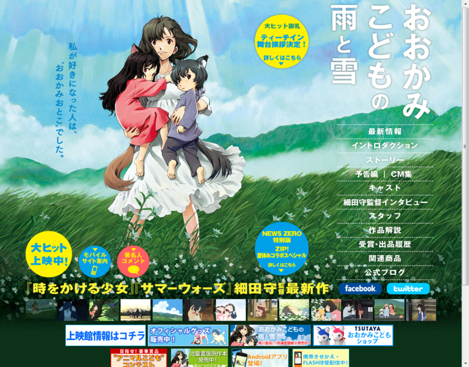

『おおかみこどもの雨と雪』
公開日：

久しぶりで劇場で泣きかけた。油断すると涙がじわじわでてきて困った……たぶん、今年最高傑作の映画だなぁ。まだ夏だけど。
まず、オープニングの美しさに心奪われ、期待高まる。これはきっとアタリだなぁ……と感じさせる。シナリオにどんでん返しはないけれど*1、淡々と丁寧に二人の子どもの変化が塗り重ねられていて、ストーリーの重量感・立体感は十分*2。もう一度、劇場でゆっくり味わいたいぐらい。
それにしても、対比が印象的な映画だった。
ひとが多いし、なんでもあるのに居所のない都会。
ひとが少ないし、なにもないのに温かい田舎*3。
やんちゃな“雪”と、おとなしい“雨”。
ひとになりたがる“雪”と、おおかみになりたい“雨”。
明るく幸せな雪の日と、暗く決断を迫る雨の日。
そして、それを終始笑顔で見守るお母さんの“花”。お母さんってのはほんとすごいものだ。
この映画を観ているあいだ、まるで“おとぎばなし”のように時間が過ぎていった感じがする。親になるっていうのはあんな感じなんだろうか。それだったら、ちょっぴり切ないことだ。
あと、焼き鳥が美味しそうだった。